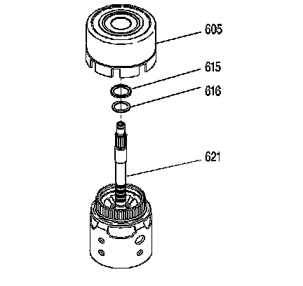
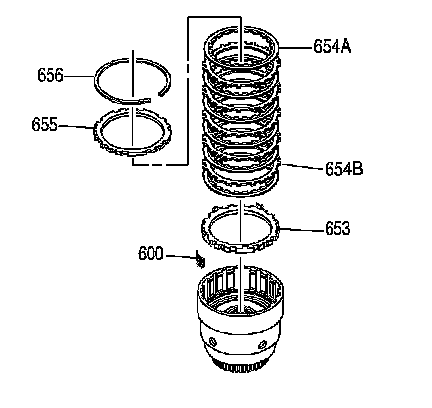
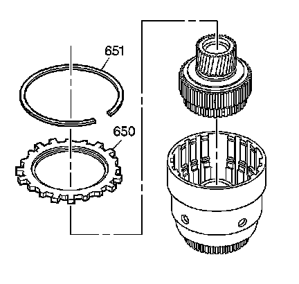
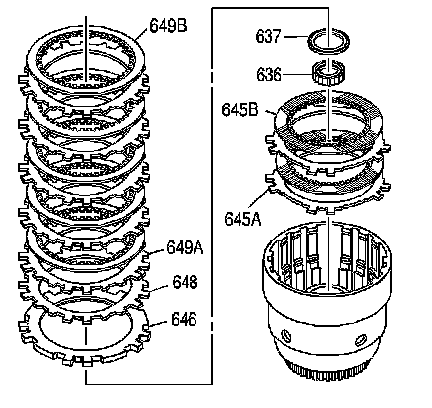
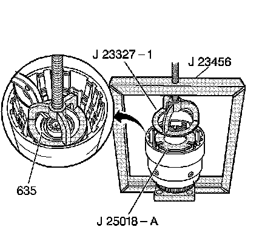
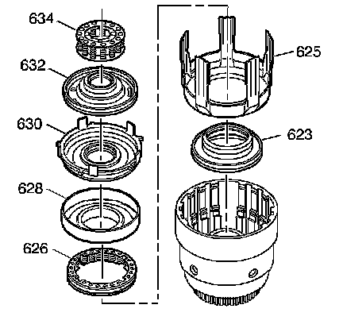

Input Clutch Assembly Disassemble
Input Clutch Assembly Disassemble
Tools Required
^ J 23327-1 Forward Clutch Spring Compressor (Bridge)
^ J 23456 Booster and Clutch Pack Compressor
^ J 25018-A Clutch Spring Compressor Adapter

1. Remove the reverse input clutch housing and drum assembly (605) from the input clutch assembly (621).
2. Remove the stator shaft/selective washer bearing assembly (615).
3. Remove the selective thrust washer (616).

4. Remove the 3rd and 4th clutch backing plate retainer ring (656).
Notice: The correct number of fiber plates must be used to avoid damage to the transmission. An incorrect stack up height can cause either excessive clutch slippage or insufficient release, resulting in burned clutch plates.
Important: The 3rd and 4th clutch plate stack is model specific. Clutch plate stack up could be either 6 or 7 plates.
5. Remove all 3rd and 4th clutch plates (653-655).
6. Remove the 3-4 clutch boost spring assemblies (600).

7. Remove the forward clutch backing plate retainer ring (651).
8. Remove the forward clutch selective backing plate (650).
9. Remove the forward clutch sprag assembly.

10. Remove all forward clutch plates (646, 648, 649A, 649B).
11. Remove the input sun gear bearing assembly (637).
12. Remove the input housing to output shaft seal (636).
13. Remove all overrun clutch plates (645A, 645B).

14. Install the J 23327-1 and the J 25018-A.
15. Compress the overrun clutch spring, using the J 23456.
16. Remove the overrun clutch spring retainer snap ring (635).
17. Remove the J 23327-1 and the J 25018-A.

18. Remove the overrun clutch spring assembly (634).
19. Remove the overrun clutch piston (632).
20. Remove the forward clutch piston (630).
21. Remove the forward clutch housing (628).
22. Remove the 3rd and 4th clutch spring assembly (626).
23. Remove the 3rd and 4th clutch apply ring (625).
24. Remove the 3rd and 4th clutch piston (623).